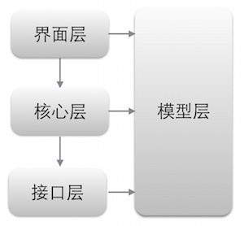

原创文章，转载请注明：转载自Keegan小钢 并标明原文链接：http://keeganlee.me/post/android/20150605 微信订阅号：keeganlee_me 写于2015-06-05
Android项目重构之路:架构篇 Android项目重构之路:界面篇 Android项目重构之路:实现篇
去年10月底换到了新公司，做移动研发组的负责人，刚开始接手android项目时，发现该项目真的是一团糟。首先是其架构，是按功能模块进行划分的，本来按模块划分也挺好的，可是，他却分得太细，总共分为了17个模块，而好几个模块也就只有两三个类而已。但应用本身其实比较简单，要按功能模块来分的话，最多五个模块就够了。另外，有好多模块划分也很模糊，也有很多类按其功能其实可以属于多个模块的，也有些类定义不明确，做了不该做的事。有时候，我要找一个界面的Activity，按照其功能应该属于A模块的，可是在A模块里却找不到，于是，我只好去AndroidManifest文件里找了，找到才发现原来在B模块里。也有时候，我要找另一个界面的Activity，可我看遍了所有模块，也没看出这个界面应该属于哪个模块，没法子，又只能去AndroidManifest文件里找了，找到才发现竟然在C模块里。代码也是又乱又臭，导致出现一大堆bug又不好找，改好一个bug又出现另一个。整个项目从架构到代码都是又臭又乱，开发人员只是不停地改bug，根本没法做新功能，更别谈扩展了。当时，公司已经有为不同客户定制化app的需求，而现有的架构完全无法满足这样的需求。因此，我决定重构，搭建一个易维护、易扩展、可定制的项目。
我将项目分为了四个层级：模型层、接口层、核心层、界面层。模型层定义了所有的模型；接口层封装了服务器提供的API；核心层处理所有业务逻辑；界面层就处理界面的展示。几个层级之间的关系如下图所示：  下面展开说明具体的每个层次：
接口层
接口层封装了网络底层的API，并提供给核心层调用。刚开始，为了简单，该层的核心类我只定义了4个：
- PostEngine，请求引擎类，对请求的发送和响应结果进行处理；
- Response，响应类，封装了Http请求返回的数据结构；
- Api，接口类，定义了所有接口方法；
- ApiImpl，接口实现类，实现所有接口方法。
PostEngine将请求封装好发送到服务器，并对响应结果的json数据转化为Response对象返回。Response其实就是响应结果的json数据实体类，json数据是有固定结构的，分为三类，如下：
{"event": "0", "msg": "success"} {"event": "0", "msg": "success", "obj":{...}} {"event": "0", "msg": "success", "objList":[{...}, {...}], "currentPage": 1, "pageSize": 20, "maxCount": 2, "maxPage": 1}
event为返回码，0表示成功，msg则是返回的信息，obj是返回的单个数据对象，objList是返回的数据对象数组，currentPage表示当前页，pageSize则表示当前页最多对象数量，maxCount表示对象数据总量，maxPage表示总共有多少页。根据此结构，Response基本的定义如下：
public class Response<T> { private String event; private String msg; private T obj; private T objList; private int currentPage; private int pageSize; private int maxCount; private int maxPage; //getter和setter方法 ... }
每个属性名称都要与json数据对应的名称相一致，否则无法转化。obj和objList用泛型则可以转化为相应的具体对象了。
Api接口类定义了所有的接口方法，方法定义类似如下：
public Response<Void> login(String loginName, String password); public Response<VersionInfo> getLastVersion(); public Response<List<Coupon>> listNewCoupon(int currentPage, int pageSize);
ApiImpl则实现所有Api接口了，实现代码类似如下：
@Override public Response<Void> login(String loginName, String password) { try { String method = Api.LOGIN; List<NameValuePair> params = new ArrayList<NameValuePair>(); params.add(new BasicNameValuePair("loginName", loginName)); params.add(new BasicNameValuePair("password", EncryptUtil.makeMD5(password))); TypeToken<Response<Void>> typeToken = new TypeToken<Response<Void>>(){}; return postEngine.specialHandle(method, params, typeToken); } catch (Exception e) { //异常处理 } }
实现中将请求参数和返回的类型定义好，调用PostEngine对象进行处理。 接口层的核心基本上就是这些了。
核心层
核心层介于接口层和界面层之间，主要处理业务逻辑，集中做数据处理。向上，给界面层提供数据处理的接口，称为Action；向下，调用接口层向服务器请求数据。向上的Action中定义的方法类似如下：
public void getCustomer(String loginName, CallbackListener<Customer> callbackListener);
这是一个获取用户信息的方法，因为需要向接口层请求服务器Api数据，所以添加了callback监听器，在callback里对返回的数据结果进行操作。CallbackListener就定义了一个成功和一个失败的方法，代码如下：
public interface CallbackListener<T> { /** * 请求的响应结果为成功时调用 * @param data 返回的数据 */ public void onSuccess(T data); /** * 请求的响应结果为失败时调用 * @param errorEvent 错误码 * @param message 错误信息 */ public void onFailure(String errorEvent, String message); }
接口的实现基本分为两步：
- 参数检查，检查参数的合法性，包括非空检查、边界检查、有效性检查等；
- 使用异步任务调用接口层的Api，返回响应结果。
需要注意的是，Action是面向界面的，界面上的数据可能需要根据不同情况调用不同的Api。 后续扩展可以在这里添加缓存，但也要视不同情况而定，比如有些变化太快的数据，添加缓存就不太适合了。
界面层
界面层处于最上层，其核心就是负责界面的展示。
因为公司有为不同商户定制不同app的需求，因此，这里就需要建立多个app的界面，这是一个很麻烦的事情，还好，Android Studio提供了很方便的方法可以大大减少工作量，主要通过设置Gradle，不同app可以添加不同的productFlavors。
界面层package的定义我也并不按照旧版的功能模块划分，而根据不同类型划分，主要分为以下几个包：
 其中，activity、adapter、fragment各自都有一个基类，做统一的处理，比如定义了一些共用的常量、对象和方法等。
界面层是最复杂，最容易变得混乱不堪，最容易出问题的层级。所以，从架构到代码，很多东西都需要设计好，以及规范好，才能保证程序易维护、易扩展。后续的文章里将会详细分享下我在这方面的经验。
其中，activity、adapter、fragment各自都有一个基类，做统一的处理，比如定义了一些共用的常量、对象和方法等。
界面层是最复杂，最容易变得混乱不堪，最容易出问题的层级。所以，从架构到代码，很多东西都需要设计好，以及规范好，才能保证程序易维护、易扩展。后续的文章里将会详细分享下我在这方面的经验。
模型层
模型层横跨所有层级，封装了所有数据实体类，基本上也是跟json的obj数据一致的，在接口层会将obj转化为相应的实体类，再通过Action传到界面层。另外，模型层还定义了一些常量，比如用户状态、支付状态等。在Api里返回的是用1、2、3这样定义的，而我则用枚举类定义了这些状态。用枚举类定义，就可以避免了边界的检查，同时也更明了，谁会记得那么多1、2、3都代表什么状态呢。然而用枚举类定义的话，就必须能将1、2、3转化为相应的枚举常量。这里，我提供两种实现方式： 1.使用gson的@SerializedName标签，比如0为FALSE，1为TRUE，则可以如下定义：
public enum BooleanType { @SerializedName("0") FALSE, @SerializedName("1") TRUE }
2.通过定义一个value，如下：
public enum BooleanType { FALSE("0"), TRUE("1"); private String value; BooleanType(String value) { this.value = value; } public String getValue() { return value; } }
通过gson的方式，直接访问TRUE或FALSE就会自动序列化为1或0；如果通过第二种方式，因为没有序列化，则需要通过getValue方式获取1或0。
结束
以上就是最基本的架构了，讲得比较简单，只列了几个核心的东西。并没有进一步去扩展，扩展是下一步的事情了，后续的文章里会慢慢展开。
扫描以下二维码即可关注订阅号。